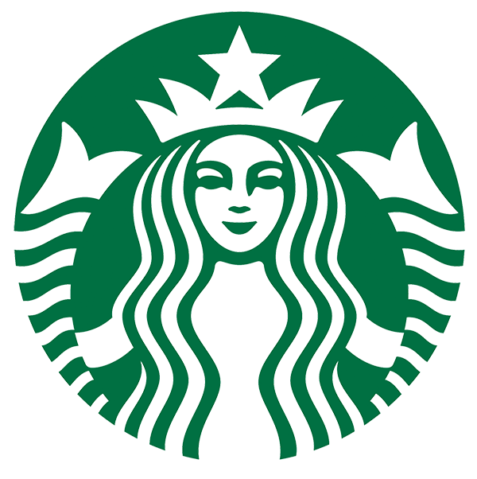
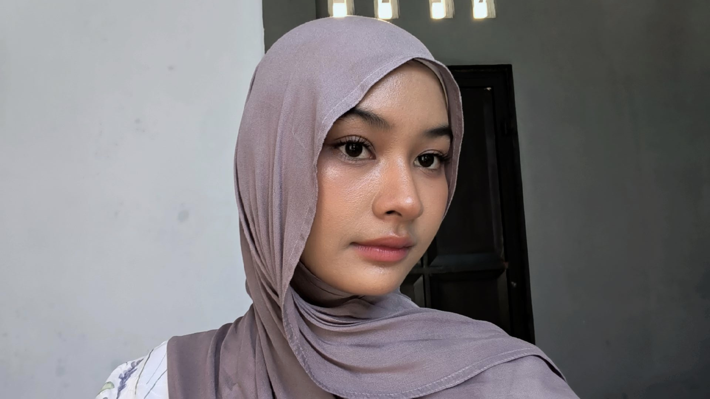

Pendekatan Situation, Complication, dan Resolution (SCR) untuk memahami kondisi bisnis, mengidentifikasi tantangan utama, serta menyusun strategi peningkatan kinerja berdasarkan data.

23082010012
23082010229
Dashboard Situation menampilkan gambaran umum kondisi bisnis Starbucks pada periode 2024–2025 yang mencakup kinerja penjualan, karakteristik pelanggan, serta pola penggunaan kanal pemesanan. Visualisasi utama meliputi tren perbandingan jumlah pesanan antara tahun 2024 dan 2025, distribusi demografi pelanggan berdasarkan kelompok usia, komposisi produk antara minuman dan makanan, serta kontribusi kanal pemesanan dan wilayah penjualan. Dashboard ini digunakan untuk memberikan gambaran kondisi bisnis secara keseluruhan sebelum dilakukan analisis lebih lanjut.
Dashboard Complication menampilkan analisis terhadap berbagai tantangan yang terjadi dalam bisnis Starbucks, khususnya terkait pertumbuhan yang stagnan. Visualisasi pada dashboard ini mencakup perbandingan pertumbuhan pesanan, pendapatan, dan jumlah pelanggan yang masih berada pada level rendah, distribusi kontribusi pelanggan berdasarkan kelompok usia, serta pola ketergantungan terhadap segmen pelanggan tertentu. Selain itu, dashboard ini juga memperlihatkan ketidakseimbangan kontribusi kanal pemesanan serta dominasi produk minuman di seluruh channel penjualan.
Dashboard Resolution menampilkan berbagai strategi yang dirancang untuk meningkatkan pertumbuhan bisnis Starbucks pada tahun 2026. Visualisasi pada dashboard ini mencakup target pertumbuhan yang ditetapkan sebesar 5%, strategi peningkatan loyalitas pelanggan melalui program membership, optimalisasi penjualan makanan melalui bundling produk, serta pendekatan personalisasi berdasarkan perilaku pelanggan. Selain itu, dashboard ini juga menampilkan prioritas strategi berdasarkan kanal pemesanan, yaitu Drive-Thru, Mobile App, serta In-Store dan Kiosk, yang masing-masing memiliki pendekatan strategi yang berbeda untuk meningkatkan nilai transaksi dan engagement pelanggan.
Berdasarkan rangkaian analisis dashboard menggunakan pendekatan kerangka kerja SCR, ditemukan bahwa bisnis Starbucks berada dalam kondisi performa penjualan yang stabil namun menghadapi risiko stagnasi pertumbuhan jangka panjang karena laju pertumbuhan tahunan berada di bawah 1%. Visualisasi data menunjukkan ketergantungan yang tinggi pada segmen demografi tunggal (usia 25–34 tahun) serta ketimpangan proporsi produk di mana penjualan minuman jauh melampaui produk makanan di seluruh kanal penjualan yang tersedia.
Untuk mengatasi tantangan tersebut, rangkaian rekomendasi strategis telah disusun guna membidik pertumbuhan moderat sebesar 5% pada tahun 2026. Fokus utama diarahkan pada optimalisasi akuisisi program loyalitas bagi pelanggan non-member, integrasi strategi promo produk bundling secara lintas kanal pemesanan, serta pemanfaatan fitur personalisasi kustomisasi menu guna mendorong peningkatan nilai transaksi rata-rata (AOV) sekaligus memperluas basis pasar pelanggan secara berkelanjutan.
Bisnis mencatat total 50.068 pesanan sepanjang tahun 2025 dengan performa yang stabil di atas tahun sebelumnya. Pasar utama saat ini didominasi oleh wilayah Suburban, kelompok usia produktif 25–34 tahun, serta penjualan lini produk minuman yang mencapai porsi 68%.
Muncul tantangan berupa stagnasi pertumbuhan riil yang tertahan di bawah angka 1% pada semua aspek operasional. Kondisi ini diperparah oleh ketergantungan tinggi pada satu segmen usia, ketimpangan antar-kanal, serta rendahnya pembelian produk makanan.
Rekomendasi taktis difokuskan pada pengejaran target pertumbuhan 5% untuk tahun depan melalui konversi pelanggan non-member, peningkatan pembelian makanan lewat paket bundling, promosi personal, serta penentuan prioritas strategi yang adaptif di setiap kanal.